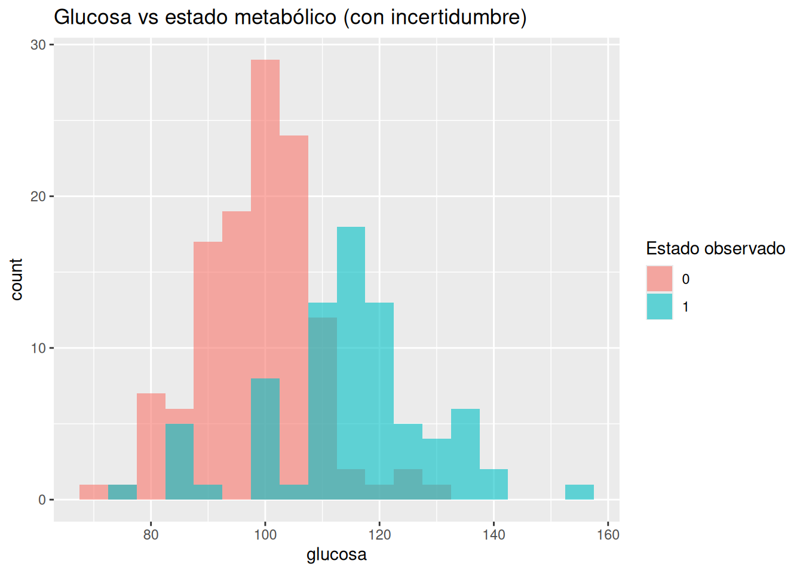
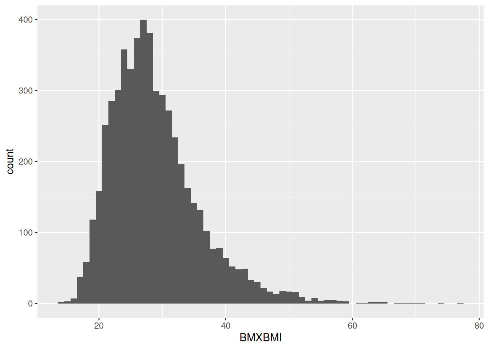

library(tidyverse)
set.seed(123)
# Simulamos 200 pacientes
n <- 200
datos <- tibble(
# Se crean 200 observaciones con una media de 105 y una desviación
# estándar de 15
glucosa = rnorm(n, mean = 105, sd = 15),
# "verdadero estado" (1 = alteración metabólica, 0 = normal)
# Se categoriza
estado_real = if_else(glucosa > 110, 1, 0)
)
# Agregamos ruido (simulando incertidumbre real)
datos <- datos %>%
mutate(
# Un 10% se invierte simulando errores posibles de la vida real
# como: errores diagnósticos, medición imperfecta o variabilidad
# biológica
estado_observado = if_else(runif(n) < 0.1, 1 - estado_real, estado_real)
)1.- ¿Qué significa incertidumbre en medicina?
1. Intuición (SIN código)
Imagina esta escena clínica.
Un paciente llega a consulta. Tiene sobrepeso, algo de fatiga y antecedentes familiares de diabetes. Solicitas exámenes:
- Glucosa: 112 mg/dL
- HbA1c: 5.9%
Ahora viene la pregunta incómoda:
¿Tiene diabetes sí o no?
La formación tradicional nos empuja a responder como si esto fuera una pregunta binaria:
- Sí
- No
Pero en el fondo sabes que esa respuesta es… artificial.
El problema del pensamiento determinista
En medicina, muchas veces actuamos como si:
Un valor → implica una verdad absoluta
Ejemplos típicos:
- HbA1c ≥ 6.5% → diabetes
- IMC ≥ 30 → obesidad
- PA ≥ 140/90 → hipertensión
Esto es útil… pero es una simplificación.
Porque en la realidad:
- Un paciente con HbA1c de 6.4% no es radicalmente distinto de uno con 6.5%
- Un IMC de 29.9 vs 30 no cambia mágicamente el metabolismo
- La presión arterial varía minuto a minuto
👉 Es decir: la biología no funciona en categorías rígidas
Entonces… ¿qué es la incertidumbre?
La incertidumbre en medicina significa:
No estamos completamente seguros de lo que está pasando, aunque tengamos datos
Y esto ocurre por varias razones:
- Variabilidad biológica:
- El cuerpo humano cambia constantemente
- Errores de medición:
- Ningún examen es perfecto
- Modelos simplificados:
- IMC ≠ grasa visceral Glucosa ≠ estado metabólico completo
- Información incompleta:
- No vemos todo: dieta, sueño, estrés, genética
Un ejemplo clínico más claro
Dos pacientes:
| Paciente | Glucosa | HbA1c | IMC |
|---|---|---|---|
| A | 126 | 6.6% | 31 |
| B | 124 | 6.4% | 30 |
Según criterios clásicos:
- Paciente A → “diabético”
- Paciente B → “no diabético”
Pero clínicamente…
👉 ¿Realmente son tan diferentes?
La respuesta honesta es: no lo sabemos con certeza
Diagnóstico vs Probabilidad
Aquí aparece una idea clave:
Un diagnóstico no es una verdad absoluta, es una decisión bajo incertidumbre
En lugar de pensar:
- “Tiene diabetes”
Podríamos pensar:
- “Hay una alta probabilidad de que tenga alteración metabólica significativa”
Esto cambia todo.
Introducción al pensamiento bayesiano
El pensamiento bayesiano propone algo más realista:
La probabilidad representa qué tan fuerte creemos en una hipótesis, dada la información disponible
Por ejemplo:
En lugar de decir:
- “Este paciente es sano”
Decimos:
- “Con la información actual, creemos que la probabilidad de enfermedad es baja, pero no cero”
| Enfoque tradicional | Enfoque bayesiano |
|---|---|
| Diagnóstico fijo | Probabilidad |
| Blanco o negro | Escala de grises |
| Certeza aparente | Incertidumbre explícita |
| Reglas rígidas | Actualización continua |
¿Por qué esto es importante en obesidad?
En el contexto del metabolismo y obesidad:
El IMC no distingue grasa visceral vs subcutánea Dos personas con el mismo IMC pueden tener: Riesgo cardiometabólico muy distinto Niveles de inflamación diferentes
👉 Entonces:
Clasificar no es entender
Y ahí es donde entra Bayes.
Idea clave del capítulo
La medicina no trata con certezas, sino con niveles de creencia basados en evidencia incompleta
Y aprender a manejar eso explícitamente es lo que te convierte en un mejor analista… y un mejor clínico.
2. Ejemplo simple (simulación en R)
Vamos a simular algo muy sencillo:
👉 Pacientes con niveles de glucosa y su “verdadero estado metabólico” (que en la vida real no vemos directamente)
Visualización
# Gráfico en el que se observarán barras azules por
# debajo de 110 y barras rosadas por encima de 110 lo
# que corresponde al 10% del error de la simulación
# anterior con runif
ggplot(datos, aes(x = glucosa, fill = factor(estado_observado))) +
geom_histogram(binwidth = 5, alpha = 0.6, position = "identity") +
labs(
fill = "Estado observado",
title = "Glucosa vs estado metabólico (con incertidumbre)"
)
¿Qué estamos viendo?
- No hay una línea perfecta que separe sano vs enfermo
- Hay superposición
- Hay errores (simulados como en la vida real)
👉 Esto refleja la realidad clínica:
Los datos nunca son perfectos
Experimento mental
Si un paciente tiene glucosa de 112:
- ¿Está enfermo?
- ¿Está sano?
La simulación muestra:
👉 Puede estar en ambos grupos
3. Ejemplo aplicado (NHANES ligero)
Ahora conectemos con datos reales.
Supongamos que observamos:
- Glucosa (LBXSGL)
- HbA1c (LBXGH)
- IMC (BMXBMI)
En NHANES verías algo como:
df_obesidad %>%
select(LBXSGL, LBXGH, BMXBMI) %>%
drop_na() %>%
ggplot(aes(x = BMXBMI)) +
geom_histogram(binwidth = 1)
Lo importante aquí
- No hay cortes naturales perfectos
- No hay “dos poblaciones separadas” limpias
- Todo es continuo
👉 Esto refuerza la idea:
La realidad biológica es probabilística, no categórica
4. Conclusión del capítulo
Este capítulo no trata de modelos ni de fórmulas.
Trata de algo más fundamental:
Cómo pensar
Ejercicios — Capítulo 1
Ejercicio 1 — El diagnóstico incómodo
Un paciente tiene:
- Glucosa: 125 mg/dL
- HbA1c: 6.4%
- IMC: 31
👉 Pregunta:
- Según criterios clásicos, ¿es diabético?
- ¿Qué tan seguro estás de esa respuesta? (alto, medio, bajo)
- Reformula tu respuesta en términos probabilísticos
💡 Objetivo: romper el pensamiento binario
Ejercicio 2 — Dos pacientes casi iguales
Paciente A:
- HbA1c: 6.5%
Paciente B:
- HbA1c: 6.4%
👉 Pregunta:
- ¿Son clínicamente diferentes?
- ¿El sistema de clasificación los trata diferente?
- ¿Qué problema conceptual estás viendo aquí?
💡 Objetivo: detectar arbitrariedad de los puntos de corte
Ejercicio 3 — IMC como medida imperfecta
Dos pacientes:
- Ambos con IMC = 30
- Uno con alta grasa visceral
- Otro con masa muscular alta
👉 Pregunta:
- ¿Tienen el mismo riesgo cardiometabólico?
- ¿Qué tipo de incertidumbre estás enfrentando?
- ¿Qué información te falta?
💡 Objetivo: entender limitaciones de los datos
Ejercicio 4 — Pensamiento bayesiano básico
Un paciente tiene:
- Obesidad
- Sedentarismo
- Historia familiar de diabetes
👉 Pregunta:
- Antes de ver exámenes, ¿crees que la probabilidad de diabetes es alta o baja?
- ¿Qué estás usando aquí: datos o creencias previas?
- ¿Por qué esto NO es “mala medicina”?
💡 Objetivo: introducir la idea de prior (creencia previa)
Ejercicio 5 — Crear tu propia incertidumbre
👉 Modifica el código de simulación:
- Cambia el punto de corte de glucosa (ej: 100 en lugar de 110)
- Cambia el error (ej: 20% en lugar de 10%)
# cambia estos valoresglucosa > 100
runif(n) < 0.2
👉 Pregunta:
- ¿Qué pasa con el solapamiento?
- ¿Aumenta o disminuye la incertidumbre?
- ¿Qué escenario se parece más a la vida real?
💡 Objetivo: ver cómo nace la incertidumbre
Ejercicio 6 — El falso diagnóstico perfecto
👉 Elimina el error:
estado_observado = estado_real
👉 Pregunta:
- ¿Qué pasa con el gráfico?
- ¿Existe aún incertidumbre?
- ¿Este escenario es realista?
💡 Objetivo: entender que la perfección no existe en medicina
Ejercicio 7 — Juega con la variabilidad
👉 Cambia la desviación estándar:
rnorm(n, mean = 105, sd = 5)
rnorm(n, mean = 105, sd = 25)
👉 Pregunta:
- ¿Cómo cambia la superposición?
- ¿Qué significa esto clínicamente?
💡 Objetivo: entender variabilidad biológica
Ejercicio 8 — ¿Hay dos poblaciones?
👉 Grafica la glucosa:
ggplot(df_obesidad, aes(x = LBXSGL)) +
geom_histogram(binwidth = 5)👉 Pregunta:
- ¿Ves dos grupos claramente separados?
- ¿Dónde pondrías el punto de corte?
- ¿Qué tan arbitrario es?
💡 Objetivo: ver la continuidad de la realidad
Ejercicio 9 — Variable categórica real
Supongamos:
- Hipertensión (sí/no)
- Obesidad (sí/no)
👉 Pregunta (sin modelo aún):
- ¿Crees que están relacionadas?
- ¿Cómo lo expresarías en términos de probabilidad?
Ejemplo esperado:
P(obesidad | hipertensión)
💡 Objetivo: empezar a pensar en probabilidades condicionales
Ejercicio 10 — Traducción mental
Convierte estas frases:
❌ “El paciente es diabético”
👉 En versión bayesiana:
❌ “El paciente está sano”
👉 En versión bayesiana:
❌ “El IMC indica obesidad”
👉 En versión bayesiana:
💡 Objetivo: reprogramar tu lenguaje clínico
Ejercicio 11 — Detecta el error
Un colega dice:
“Si la HbA1c es menor a 6.5%, no hay diabetes”
👉 Pregunta:
- ¿Qué está mal en esa afirmación?
- ¿Qué tipo de pensamiento es?
- ¿Cómo lo corregirías?
Ejercicio 12 — Tu propia práctica clínica
Piensa en un paciente real que hayas visto recientemente.
👉 Responde:
- ¿Qué decisión tomaste?
- ¿Qué incertidumbre había?
- ¿La expresaste o la ignoraste?
- ¿Cómo la expresarías ahora en términos
- probabilísticos?